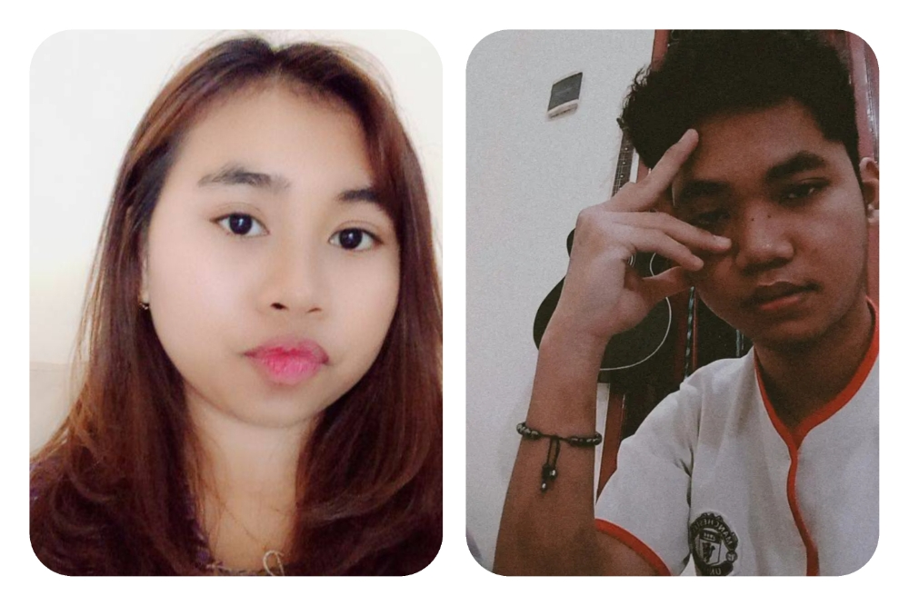
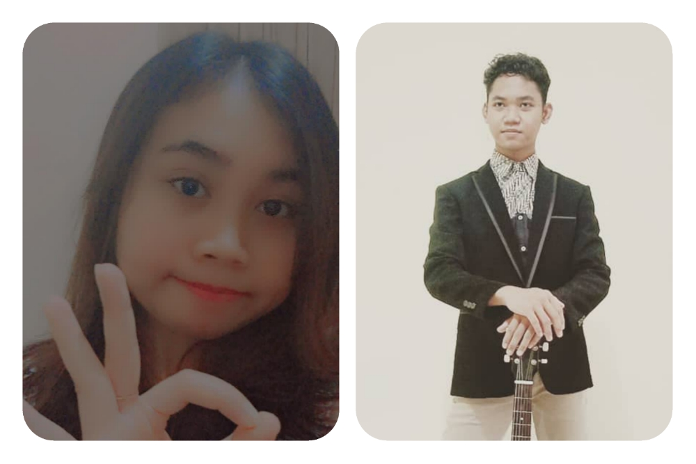

7 October 2021

|
Dear,
|
Holla
Good evening my cuties panda!
it's me, nura
First thing first, I wanna say HAPPY BIRTHDAY!
to the prettiest girl on the EARTH.
May all your dreams come true, no matter how small or big they are. hahaa, cie uda lebih tua
deh daripada gua even emang lu lebih tua sih hhe. but, its okay ta i'm never judge book by
the cover. hey, gua ngga tau lo bakal buka ni halaman apakah pas di tanggal lu ulang
tahun atau malah terlambat mungkin juga kecepetan. ya aku g tau. yang penting aku mo
ngucapin ke kamu. jangan kaget ya aku kirim surat lewat web, dan sorry banget lu kudu ngetik
ulang web address nya manual lah, buka nya harus di laptop lah, kudu masukin password lah
yang mungkin ngerepotin lu hhehe. ini isinya mungkin sedikit panjang. kaya koran mungkin.
bacanya santai aja, sambil nyemil gapapa kalopun g abis baca hari ini boleh baca besok
lagi. so enjoy it!
Okay, dicta. i wanna tell about you. pertama kali ketemu di soul. jujur aja aku gtau kamu orangnya kaya gimana. ntah kenapa juga nyaman bgt kalo call ama lu. aku masih inget banget awal aku ngerasa deket sama kamu itu pas badanku lagi ngedrop. kamu khawatirin aku kenapa-napa (ish pede bet gua) marah" soal obat lah, nanya makannya gimana lah, mungkin karena lu anak kesehatan jadi itu udah biasa buat care in orang sakit. but, for me its so different. pertama kalinya ada seseorang yang care bgt di saat gua sakit, selain ibu gua sendiri ya. sampe gua dijutekin gara" g nurut suruhan lu, hha. cuz of that, i thought u are special, and yaa its true hhehe. abis itu sering chat" an ama sering call an juga.
Lama kelamaan ga sadar deh kalo kita makin deket, cerita diri kita sendiri itu seperti apa orangnya dan saling sharing keseharian, saling suport juga. nyaman. iya mungkin itu yang gua rasakan ta. okay, dicta lu itu orangnya kaya gimana sih? so, setelah beberapa waktu gua kenal lu bisa kali gua kasih tau lu. so kamu itu care, setia, pinter, baik, rajin, cantik(ga usah sombong juga kalee), pedenya minta ampun, comel, dan sifat" baik lainnya. cuma ya kadang nyebelin, keras kepala kek batu wkwk, suka marah" ga jelas, susah makan(dengan alesan diet katanya sih), kalo ngambeknya beuh gua kudu jadi budak mulu dah hhahahaa. tapi ya ga pernah lama sih kalo ngambekan nya mah. itu yang gua suka dari lu ta, sorry nih ya ngata"in lu yang ngga-ngga hhehe. tapi lu itu orangnya begitu ko, jadi yaudah gpp. its okay be yourself.
Sering banget kita berantem karena hal-hal kecil. mulai dari yang masuk akal sampe yang mengada-ada ghaib alesannya hha. aku sering banget beralibi baru mengenal cewe dalam hubungan yang dekat. yang paling sering sih gara" ke gaje an gua. kadang aku juga bersikap acuh sama lu yang padahal sebenernya lu lagi butuh gua. aku tau mungkin aku orangnya egois, tapi aku juga belajar cara menghadapi perempuan itu seperti apa. ya sabar aja ya, aku begini orangnya. aku baik kok, rajin, kadang pinter, ga jelek ga ganteng juga, hehe. tapi yang paling penting sih aku setia orangnya.
Ta, cuma mau memperjelas aja hubungan kita. we got in a relationship. u are my gf, and im your bf. sorry banget ya dulu aku ngomong itu ngga disaat moment yang tepat. tapi, aku ga mau kehilangan kesempatan juga. aku ngga mau nyesel tanpa ada usaha. so, i just do it. dan aku mau kita sama sama jalanin hubungan sebaik mungkin. ngga tau kedepannya gimana, but aku mau nikmatin setiap momentnya.
Kayanya udah dulu deh, btw gimana nih menurut lu webnnya. bagus ga, bagus ga hehe. ohya
sorry aku g bisa ngasih kado yang spesial. bingung juga ngasih apaan. semoga lu suka sih,
kalo ga suka di lelang aja juga gpp hehe. terakhir, aku ucapin sekali lagi selamat ulang
tahun yang ke 20 tahun. semoga yang disemogakan tersemogakan dan terwujud. wish u all the
best by. see ya!
click this
From your beloved boyfriend,
~Thank you. sampai bye bye!
Nura
|  | |
|  |
See Ya!